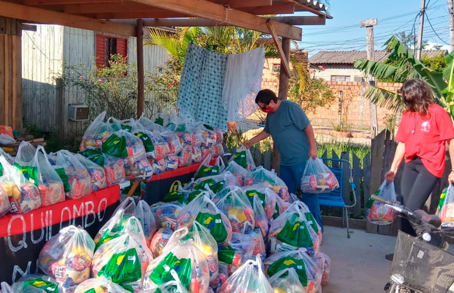

SOBRE NÓS

A fome é um problema persistente em muitas comunidades ao redor do mundo, enquanto o desperdício de alimentos continua a crescer. O projeto "Sabor Solidário" aborda essas questões aproveitando alimentos que seriam descartados e direcionando-os para aqueles que mais precisam, através da criação de cestas básicas que serão enviadas à cozinhas beneficentes que alimentarão milhares de pessoas.
Além de combater a fome, o projeto tem o potencial de reduzir os impactos ambientais negativos associados ao desperdício de alimentos.
Também proporcionando uma dieta balanceada e diversificada. Cada marmita é composta por uma variação de alimentos e pesada para se adequar a necessidade.
Cadastre-se abaixo!
Receba alertas de ações e novos conteúdos no seu e-mail.
 Av. dos Austronautas, 2023 - São Paulo, 02675-031
Av. dos Austronautas, 2023 - São Paulo, 02675-031
 Seg. a Sex das 09:00 às 18:00
Seg. a Sex das 09:00 às 18:00
 Telefone: (11) 3659 - 6879
Telefone: (11) 3659 - 6879
Whatsapp: (11) 98972 - 4519
 info@saborsustentavel.org.br
info@saborsustentavel.org.br
financeiro@saborsustentavel.org.br
comunicacao@saborsustentavel.org.br